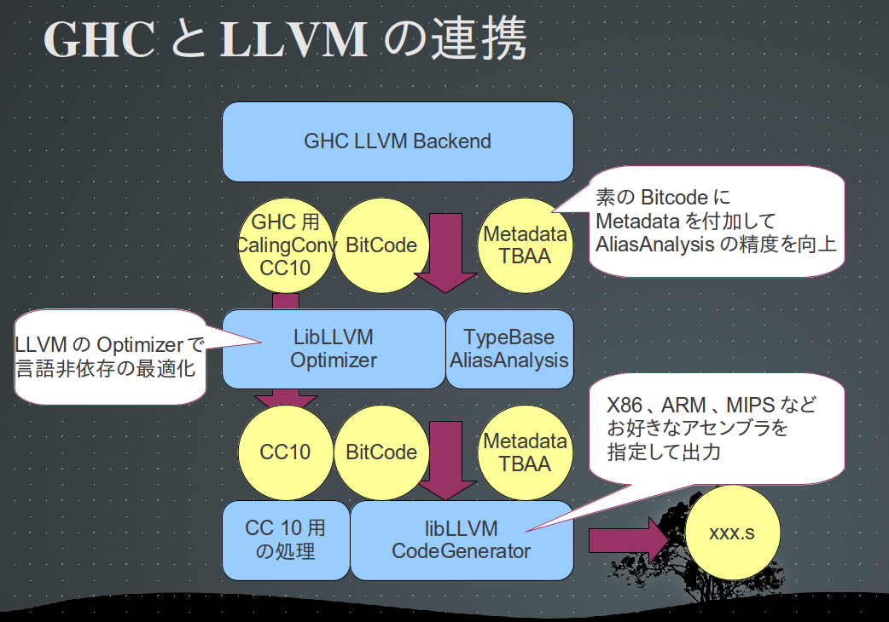

ghc llvm backend¶
GHC7.6.2と、llvm-3.2(trunk)で試してきました。
参考URL http://hackage.haskell.org/trac/ghc/wiki/Commentary/Compiler/Backends/LLVM
主な制御はこんなかんじらしい
Cmm -> (codeOutput) --->(ncg) Assembler -->(mangler, splitter) --> ('As' phase) -----> Object Code --> (link) --> executable
\---> (llvm) LLVM IR --> LLVM Optimizer --> ('llc' phase) -----/
予想¶
optとllcを使うらしい
haskellからc++のbindingされたAPIを呼び出して、
主にLLVMのbitcode生成機能(C++API), opt, llcを使用するはず
cmm -> bitcode -> optimize -> codegen -> asm
結論¶
cmm -> LLVM-IR -> optimize -> codegen -> asm
cmm -> pretty print ll -> llvm-as -> opt -> llc -> xxx.s -> mangler -> xxx.o
ghc側で、以下のように外部のコマンドを呼び出している。
$ opt < xxx.ll | llc
$ cat xxx.ll | llvm-as | opt | llc
ghcのllvm backendは、LLVMのAPIのxxな仕様変更を回避するためなのか、
C++APIを呼ぶのが面倒だったのかわからないが、
cmmからllへpretty printするだけの簡単なお仕事だった。すばらしい。
API叩いてbitcodeを生成しないところがポイント。
llファイル固有のtarget datalayoutやtarget tripleがmagic string化されている。
ダンプオプションを探す¶
いろいろあった。
-fllvm opt codegenを使ってオブジェクトを生成する。
-ddump-llvm optに渡す前のllファイルをダンプする。
-keep-llvm-file optに渡す前のllファイルを、xxx.hs --> xxx.llにファイル出力
-optlo optに渡すオプションを指定できる。
llvmのvectorizeやprofile guilded optimizationが使えるかも
-optlc llcに渡すオプションを指定できる。
構成¶
gch-7.6.1
compiler/llvmGen
file/dir line comment
Llvm
AbsSyn.hs 269 LLVM-IRの構文定義
PpLlvm.hs 422 LLVM-IRのシンボル定義とpretty printの親
Types.h 822 LLVM-IRのTypeSystem用のシンボル定義とpretty print
Llvm.hs 58 Llvmの下をimportして、module Llvm全体を定義する
LlvmCodeGen
Base.hs 258
CodeGen.hs 1362 CmmからLLVM-IRをpretty printer
Data.hs 187 structのpretty printer
Ppr.hs 158 target datalayout target tripleをmagic wordとして定義
Regs.h 109 haskell CallingConv向けの定義や、metadataの定義
LlvmCodegen.hs 162 主制御っぽい
LlvmMangler.hs 122 manglerらしい。assemblyを食べて素で書き換えるらしい。
src¶
mainからの呼び出し制御は以下の2点
module LlvmCodeGen ( llvmCodeGen, llvmFixupAsm ) where
llvmCodeGen :: DynFlags -> Handle -> UniqSupply -> [RawCmmGroup] -> IO ()
llvmFixupAsm :: DynFlags -> FilePath -> FilePath -> IO ()
GHCの最適化オプションと、opt/llcに指定する最適化オプションの対応
compiler/main/DriverPipline.hs
llvmOpts = ["-mem2reg", "-O1", "-O2"] <-- GHCのOxオプションに対応して呼ばれる。
llcの最適化オプションは、GHCに指定されたO0 O2 O3と同じものをllcに指定する。
上記はLinuxの場合で、OSXではO3を使わない. – Bug in LLVM at O3 on OSX.
LLVM向け拡張機能¶
GHCのwikiのllvmページ http://hackage.haskell.org/trac/ghc/wiki/Commentary/Compiler/Backends/LLVM
Work in progress
SIMD いろいろやってるみたい
AliasAnalysis 7.6.2だと、すでにtbaa出してる
連携時には、GHC用のCallingConvとTypeBaseAliasAnalysis用のMetadataを付加している。
AliasAnalysis TBAA¶
6種定義
定義されているMetadata
0 top
1 top->stack // 仮引数Sp_Argから派生したポインタ
2 top->heap // 仮引数Hp_Argから派生したポインタ
3 top->heap->rx // VanillaReg 仮引数R1_Argから派生したポインタ
4 top->base // BaseReg 仮引数Base_Argから派生したポインタ
5 top->other // 使われないはず。
異なるmetadataであれば安全なはず
HaskellのCCの場合、関数の仮引数にはBase_Arg, Sp_Arg, Hp_Arg R1_Argが存在する。 各々のポインタはnoalias属性が付いているが、各i32*型から派生したポインタが、 noaliasであることをLLVMのAliasAnalysisに教えるために、TBAAのmetadataを付けている。
Metadataの効果¶
optimizerの最適化の統計情報を比較してみます。
Metadataなし(7.4.2ではでない)
===-------------------------------------------------------------------------===
... Statistics Collected ...
===-------------------------------------------------------------------------===
1 cgscc-passmgr - Maximum CGSCCPassMgr iterations on one SCC
76 early-cse - Number of instructions CSE'd
113 early-cse - Number of instructions simplified or DCE'd
38 gvn - Number of instructions deleted
18 gvn - Number of instructions simplified
8 gvn - Number of loads deleted
1 inline - Number of caller-callers analyzed
11 inline - Number of functions inlined
16 inline-cost - Number of call sites analyzed
36 instcombine - Number of dead inst eliminated
3 instcombine - Number of instructions sunk
235 instcombine - Number of insts combined
12 lcssa - Number of live out of a loop variables
1 licm - Number of instructions hoisted out of loop
12 loop-unswitch - Total number of instructions analyzed
3 mem2reg - Number of PHI nodes inserted
80 mem2reg - Number of alloca's promoted with a single store
6 mem2reg - Number of alloca's promoted within one block
7 memdep - Number of block queries that were completely cached
92 memdep - Number of fully cached non-local ptr responses
170 memdep - Number of uncached non-local ptr responses
994 memory-builtins - Number of arguments with unsolved size and offset
3 scalar-evolution - Number of loops without predictable loop counts
130 scalarrepl - Number of allocas promoted
4 simplify-libcalls - Number of attributes added to library functions
9 simplifycfg - Number of blocks simplified
4 strip-dead-prototypes - Number of dead prototypes removed
1 tailcallelim - Number of tail calls removed
Metadataあり
===-------------------------------------------------------------------------===
... Statistics Collected ...
===-------------------------------------------------------------------------===
1 cgscc-passmgr - Maximum CGSCCPassMgr iterations on one SCC
76 early-cse - Number of instructions CSE'd
113 early-cse - Number of instructions simplified or DCE'd
40 gvn - Number of instructions deleted <-- この数値が増えてる。
18 gvn - Number of instructions simplified Load命令とLoad命令のAliasが分かるようになって、
10 gvn - Number of loads deleted 冗長なLoadを削除できるようになった。
1 inline - Number of caller-callers analyzed
11 inline - Number of functions inlined
16 inline-cost - Number of call sites analyzed
36 instcombine - Number of dead inst eliminated
3 instcombine - Number of instructions sunk
235 instcombine - Number of insts combined
12 lcssa - Number of live out of a loop variables
2 licm - Number of instructions hoisted out of loop
1 licm - Number of load insts hoisted or sunk
12 loop-unswitch - Total number of instructions analyzed
3 mem2reg - Number of PHI nodes inserted
80 mem2reg - Number of alloca's promoted with a single store
6 mem2reg - Number of alloca's promoted within one block
4 memdep - Number of block queries that were completely cached
113 memdep - Number of fully cached non-local ptr responses
186 memdep - Number of uncached non-local ptr responses
1093 memory-builtins - Number of arguments with unsolved size and offset
3 scalar-evolution - Number of loops without predictable loop counts
130 scalarrepl - Number of allocas promoted
4 simplify-libcalls - Number of attributes added to library functions
9 simplifycfg - Number of blocks simplified
4 strip-dead-prototypes - Number of dead prototypes removed
1 tailcallelim - Number of tail calls removed
GHC CallingConvention¶
LLVM
http://llvm.org/docs/LangRef.html#callingconv
“cc 10” - GHC convention:
This calling convention has been implemented specifically for use by the Glasgow Haskell Compiler (GHC). It passes everything in registers, going to extremes to achieve this by disabling callee save registers. This calling convention should not be used lightly but only for specific situations such as an alternative to the register pinning performance technique often used when implementing functional programming languages.At the moment only X86 supports this convention and it has the following limitations: On X86-32 only supports up to 4 bit type parameters. No floating point types are supported. On X86-64 only supports up to 10 bit type parameters and 6 floating point parameters. This calling convention supports tail call optimization but requires both the caller and callee are using it.
sample
define internal cc10 void @s1Vh_info(i32* noalias nocapture %Base_Arg, i32* noalias nocapture %Sp_Arg, i32* noalias nocapture %Hp_Arg, i32 %R1_Arg) nounwind section "X98A__STRIP,__me2" align 4 {
c1Wb:
%ln1Wd = getelementptr inbounds i32* %Sp_Arg, i32 1
%ln1Wf = load i32* %ln1Wd, align 4
%ln1Wh = mul i32 %ln1Wf, %R1_Arg
%ln1Wk = getelementptr inbounds i32* %Sp_Arg, i32 2
%ln1Wq = load i32* %ln1Wk, align 4
%ln1Wr = inttoptr i32 %ln1Wq to void (i32*, i32*, i32*, i32)*
tail call cc10 void %ln1Wr(i32* %Base_Arg, i32* %ln1Wk, i32* %Hp_Arg, i32 %ln1Wh) nounwind
ret void
}